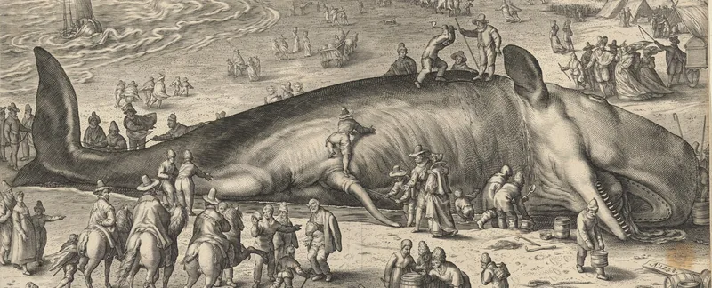
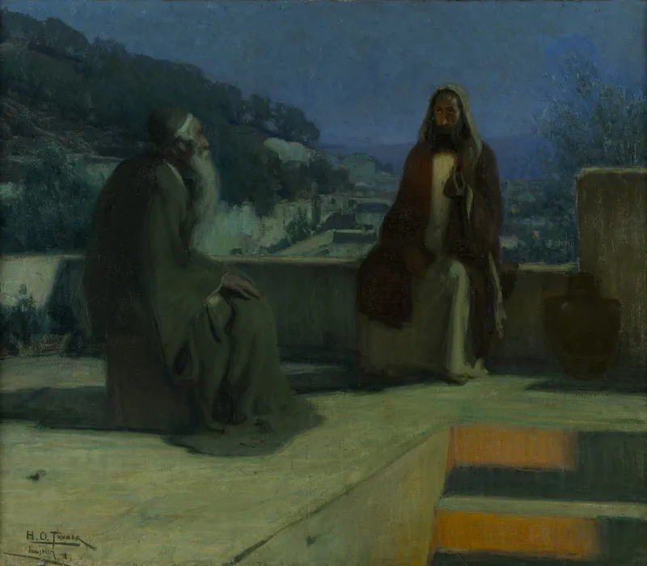
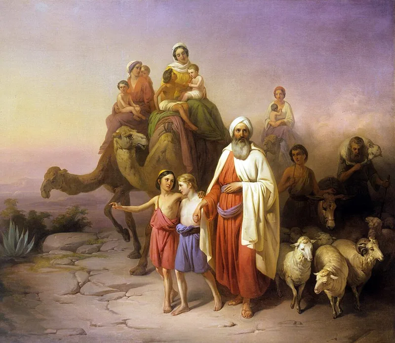
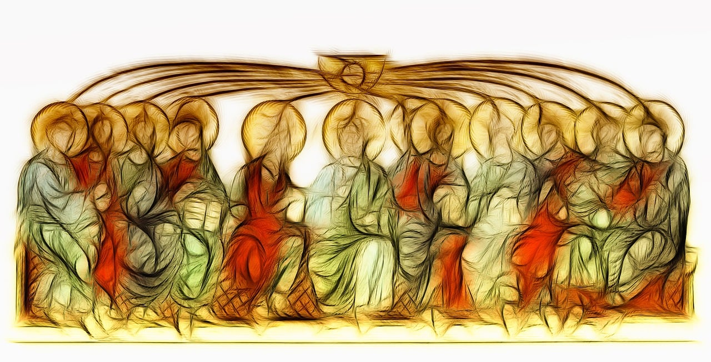

πᾶς ὁ πιστεύων
Free Grace Theology & Biblical Studies
Library of Biblical Content
Here's the complete listing of all of the blog articles for Whosoever Believes. Most were originally papers I wrote for seminary classes on topics like soteriology, eschatology, and dispensationalism. I refined the format to better suit the web. I'm always looking for new topics to write about, so if you have any questions or ideas feel free to connect on Discord and drop me a message. I want the articles to cover a broad range of topics to help address all kinds of criticisms of Free Grace theology and biblical inerrancy.
I pray everyone reading will learn biblical truth, come to know God, and grow in a mature and vibrant faith.
Koine Greek Genitive Uses
Identifying genitive uses and the “Hearing of faith”
→How Jesus Bookended the Old Testament
Jesus' boundary for the Old Testament
→The Implications of God's Transcendence
What God's otherness means for us
→
KJV Oddities, Part 2: Dragons
How two Hebrew words became dragons
→
Synthetic Outline of the Gospel of John
Tracing the theme of believing Christ in the Gospel of John
→
Abraham: Father of Faith
Tracing the patriarch's life
→KJV Oddities, Part 1: Unicorns
The real animal behind the KJV's unicorns
→Jesus & the Rich Young Ruler's Presuppositions
How Jesus challenged a man's assumptions
→Time Problems and Solutions for Biblicists
Survey of responses to old-earth cosmology
→God's Forever Dwelling (Psalm 132)
Study of Psalm 132 and the Messiah's reign
Profiting for the Kingdom
Correctly understanding Mark 8:35–38
→The Power to Memorize Scripture
Learn how to effectively memorize Bible verses
→The Hermeneutical Spiral
The ten-step method from text to sermon
→The Gospel: Good News of Jesus Christ
How eternal life is received
→
Holy Spirit's Role in Salvation
Examining the Holy Spirit in securing eternal life
→There is a God (Book Review)
My thoughts on Flew's conversion to diesm
→House, Throne & Kingdom
Davidic Covenant summarized
→New Covenant Promises
Overview of Jeremiah 31
→Synthetic Outline of Daniel
The Book of Daniel Overviewed
→The Kingdom in Isaiah
Tracing the Kingdom through Isaiah
→The Calling of Romans 10:9
An examination of Romans 10:9–10 in context
→The Faithful Saying in Context
Examination of 2 Timothy 2:11–13 as a chiasm
→